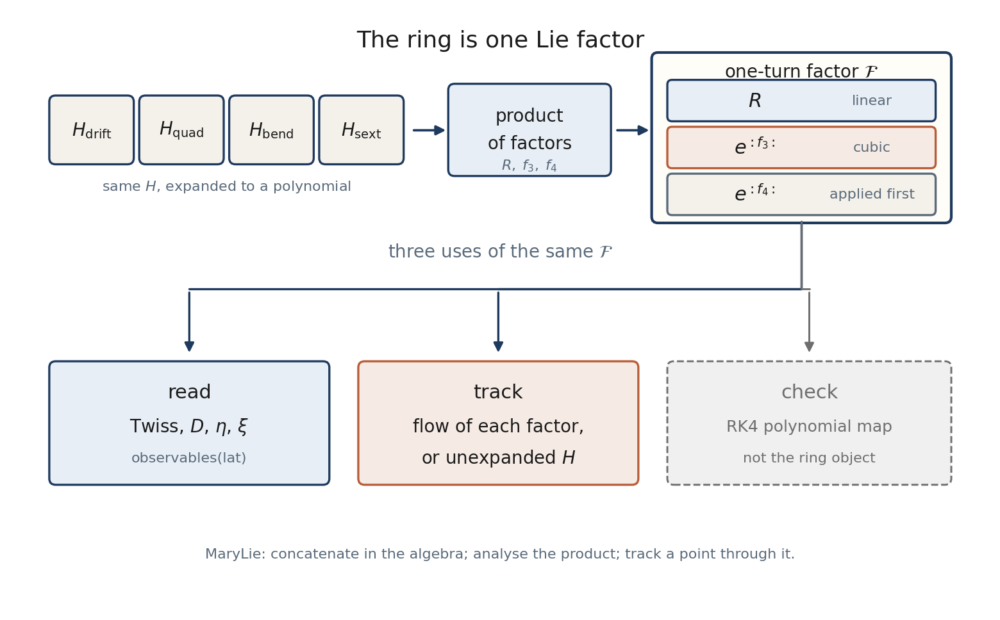

Symplectic ring modelling. The object of the ring is a product of Lie factors, not a stack of transport matrices.

The ring is one Lie factor. Concatenate Hamiltonians in the algebra; read Twiss, η, ξ from the product; track a point through it. An RK4 polynomial map is a check, not the ring object.One polynomial, three homogeneous readings: degree 1 is Twiss and η₀; degree 2 is D₂ and η₁; degree 3 is chromaticity.
HTML pages live in docs/build/. Markdown under docs/src/ is only the source used to rebuild them.